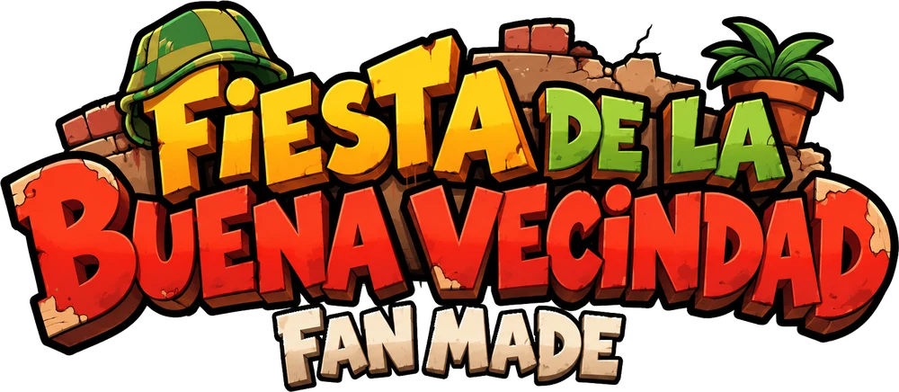

Sos el corazón rojo. Movelo y esquivá todo lo que entra a la caja: pelotas, cachetadas, lágrimas... Cada golpe te saca vida.
PC: flechas o WASD · Celu: joystick
Los vecinos te hablan y vos elegís qué decirles. Las 3 respuestas curan, pero una es la justa: cura el doble.
Dicen que si elegís siempre la justa... la fiesta termina distinto.
A veces tenés que contestar mientras esquivás en la caja.
PC: 1 2 3 (o ↑↓ + Z) · Celu: tocá la respuesta
Cuando cada flecha llega a su lugar, apretá la misma flecha a tiempo con la música.
Primero baila el vecino y sale ¡REPITE!: después hacés vos el mismo paso.
PC: flechas / WASD (y Enter si aparece) · Celu: tocá los carriles
El Chavo se te va acercando. Juntá los cartuchos que aparecen en la caja y disparale para alejarlo. Si te alcanza... final malo.
Cuando aparece el anillo rojo sobre el profesor, bloqueá justo cuando llega al círculo.
Los vecinos te ayudan: café (cura), paleta (cura y te hace más rápido) y la pelota de Quico rompe los ataques del Chavo.
PC: flechas mover · Z disparar · X bloquear · Celu: joystick + DISPARAR / BLOQUEAR
La música nunca se frena: todo pasa al ritmo de la canción.
Si perdés, volvés al principio de esa parte. Desde Jugar → Elegir parte podés practicar cualquier parte.
Esc o ❚❚ pausa · ⚙ volumen y pantalla completa
Este es un fan game sin fines de lucro, hecho por un fan de El Chavo del Ocho.
Lo hice porque tenía el juego en mi mente cuando escuchaba la música de La Fiesta de la Buena Vecindad V2. Escuchaba la versión sin voces, o sea la instrumental, y me encantó: tiene de todo, referencias del programa del Chavo y detalles precisos, así que cuando la escuchaba me imaginaba cómo sucedía.
Para mí es una de las mejores músicas que escuché de un mod de FNF.
No quería hacer un mod de FNF por estas razones:
Para facilitar el trabajo, no lo voy a negar. No sé dibujar y sé algo de programación, ya que estoy cursando una tecnicatura, aunque apenas vamos empezando (desde el principio nos dijeron que la IA va a ser una herramienta útil en el trabajo).
Para los modelos de los personajes usé ChatGPT. No son como las versiones hechas a mano que hizo la comunidad en los videos de visualizer, que sí tienen la esencia del terror; yo traté de que se parezcan a los personajes y que reflejen la situación que están viviendo en ese momento (posiblemente por esto me critiquen mucho).
Acá tuve un debate cuando estaba por hacer este fan made del mod, ya que en mi mente solo tenía cómo sucedía y cómo sería la historia, mientras pensaba una mecánica que no afectara cómo continúa la canción, porque mi idea era que todo fuera seguido.
Pensé en la mecánica de Undertale, ya que con esta se podía jugar sin afectar mucho la continuidad de la música.
En la parte de Don Ramón puse flechas de ritmo. Aunque dije que no soy muy fan, la usé porque en ese momento él usa el baile de la Chilindrina para traerla de vuelta (ahí la música hace referencia a la canción de Peluchín y su baile). Solo para ese momento usé las flechas de ritmo.
En el final quería que se sintiera la presión de que ya es el final, así que agregué la mecánica de disparar y bloquear (lo de disparar ya estaba en el mod y lo quería incorporar): mientras está el cuadro de batalla, disparás para alejar al Chavo.
Al principio pensé que la jugabilidad fuera esquivar, atacar y hablar durante toda la canción, pero al final no me gustó.
Usé la de un remix que encontré antes. Traté de buscar el video de donde la descargué pero no lo encontré, así que con la info que tenía la música encontré el canal donde creo que la subió. Al ver el canal vi que estaba en polémica por el mod; no sé qué pasó, pero parece que borró el video.
¿Por qué no uso la original? Porque este remix lo sentí mejor por el ritmo. Traté de poner las referencias que no puso de la versión original, aunque bueno, tampoco sé crear o editar música xd.
La música del menú es un remix de NerdMath: me gustó y me pareció buena idea que se escuche en el menú. Está en los créditos, y si él me pide que no la use, la saco del juego.
En fin, espero que al jugar se hayan divertido o les haya gustado.
Cualquier crítica o sugerencia es bienvenida.
— Rey Mago